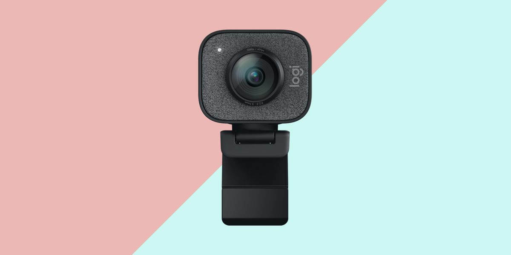
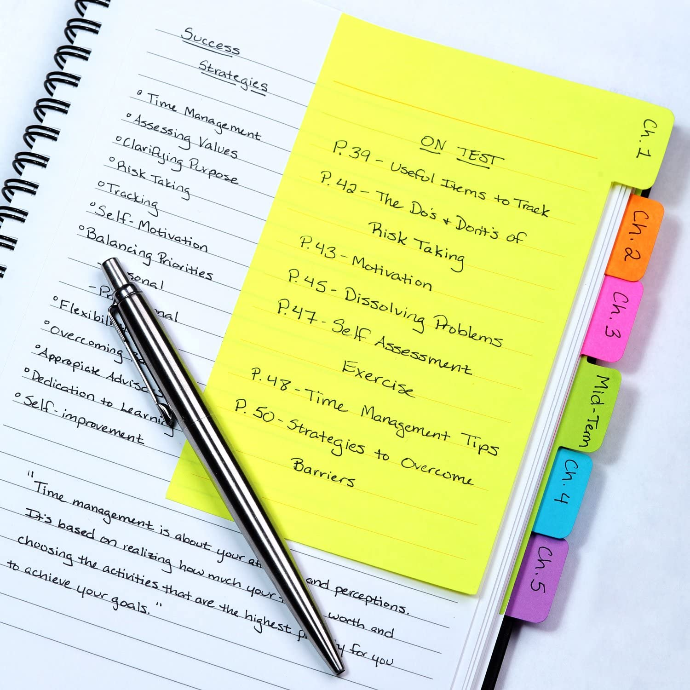
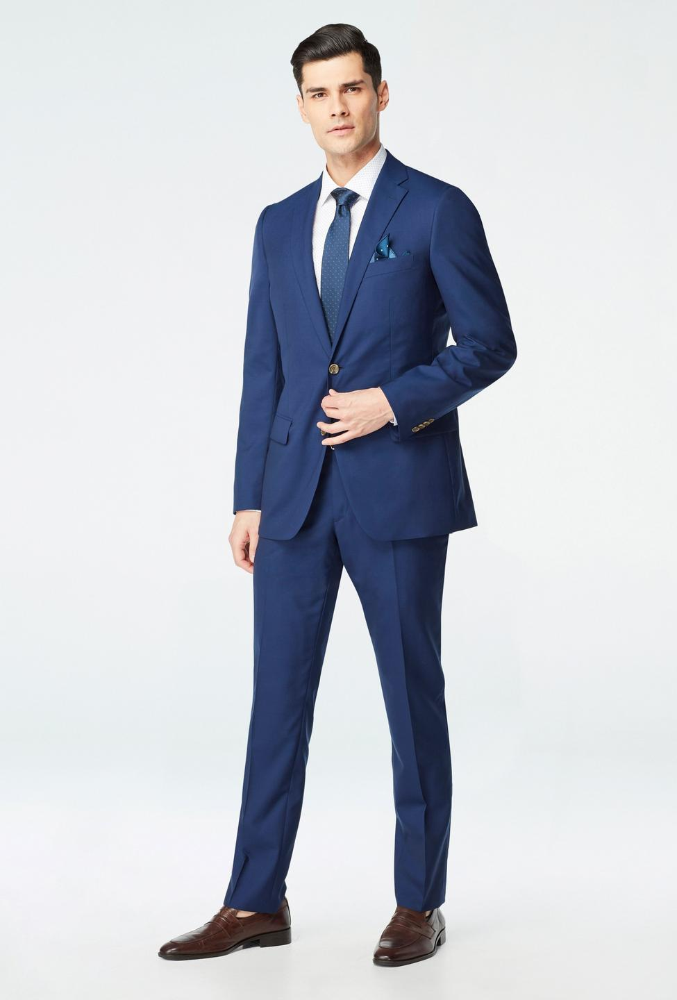

| Gear | Photo |
|---|---|
| A webcam! In the the current pandemic, many debate tournaments are being held online. This has made webcams an extremely necessary item among anyone looking to attend an online debate tournament. |  |
| Perhaps the most important piece of gear in debate is a pen and paper. Note taking is a huge part of debate, when your opponent is speaking you usually want to write down their most important points and details about them so that you can effectively rebut them in your upcoming speech. |  |
| A suit is often forgotten, but an extremely important piece of gear for a debater. A big portion of how debate rounds are scored is on presentation. If you want to present the best, you need to look the best. |  |